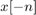
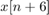
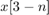
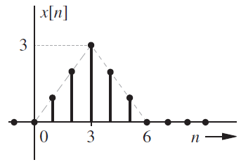

Práctica 4: Señales en tiempo discreto
Contents
Integrantes
Portillo Martínez Arturo
Objetivos
- Manipulación básica de MATLAB.
- Gráficas de señales reales y complejas discretas.
- Transformación de señales discretas (escalamientos y traslaciones).
Introducción
Se realizó la investigación del uso de Python para la realización de gráficas, a continuación se muestran las gráficas correspondientes al problema 1 mediante Python.
Esta es la primer gráfica sin modificar
Esta es la segunda gráfica ya modificada
Se puede consultar el código realizado con Python en el siguiente enlace.
Desarrollo
A continuación se realizará el desarrollo de los siguientes problemas planteados para entregar en la práctica.
1. Resuelve el problema 3.11-2.
2. Resuelve el problema 3.2-7, tenga cuidado en los escalamientos horizontales.
3. Resuelva el problema 3.11-6.
4. Con los programas desarrollados en el punto 3, resuelva 3.1-1 c) y 3.1-2 b).
5. Construya una app que permita (consultar los ejemplos preconstruidos):
- Gráficar señales en tiempo discreto reales, el usuario ingresa la definición de la señal en el formato especifico.
- El usuario puede definir el intervalo de la gráfica.
- El usuario puede seleccionar el tipo de transformación (horizontal, vertical o combinación) que desee realizar a la señal, la app deberá mostrar la gráfica de esta transformación.
- Se adjunta una imagen de la app a la práctica, y el archivo de la app.
No es necesario incluir conclusiones en esta práctica, si lo considera necesario puede incluir apéndices, no olvide incluir sus referencias.
Problema 1
Resuelve el problema 3.11-2.
3.11-2 Considere la función de tiempo discreto
La sección 3.11 utiliza funciones anónimas describiendo señales DT.
f = @(n) exp(-n/5).*cos(pi*n/5).*(n>=0);
Si bien esta función anónima funciona correctamente para una operación de reducción de resolución como f[2n], no funciona correctamente durante una operación de muestreo superior, como f[n/2]. Modifica la función anónima f para que también se adapte correctamente a las operaciones de sobremuestreo. Pruebe su código computando y trazando:
f(n/2) en (-10<=n<=10).
Tenemos la función f inical y veremos como se comporta con la señal dada.
n = -10:1:10; f = @(n) exp(-n/5).*cos(pi*n/5).*(n>=0); stem(n,f(n/2)); title('Función inicial'); xlabel('n'); ylabel('f(n/2)'); grid on;
Modificando la función
f = @(n) exp((-n)/5).*cos((pi*n)/5).*(n>=0).*(round(n)==n); stem(n,f(n/2)); title('Función modificada'); xlabel('n'); ylabel('f(n/2)'); grid on;
Mi propuesta para modificar la función creada es agregar una parte lógica a la función modificando la interpolación lineal por una interpolación 0.
Siendo que cada que el valor sea entero se graficará el valor correspondiente de la función.
Problema 2
Resuelve el problema 3.2-7, tenga cuidado en los escalamientos horizontales.
3.2-7 Para la siguiente señal mostrada grafique las siguientes señales
(a) 
(b) 
(c) ![$x[n-6]$](PR04_eq02148719982501823899.png)
(d) ![$x[3n]$](PR04_eq00551023738942954947.png)
(e)
(f) 

La señal anterior puede ser dada por la siguiente función:
n = -20:1:20; f = @(n) (n.*(n>=0) - n.*(n>3) - (n-6).*(n>3) + (n-6).*(n>6)).*(round(n)==n); stem(n,f(n)); title('Función Original'); xlabel('n'); ylabel('f(n)'); grid on; axis([-2 8,0,3]);
(a)
stem(n,f(-1*n)); title('(a)'); xlabel('n'); ylabel('f(-n)'); grid on; axis([-8 2,0,3]);
(b)
stem(n,f(n+6)); title('(b)'); xlabel('n'); ylabel('f(n+6)'); grid on; axis([-8 2,0,3]);
(c)
stem(n,f(n-6)); title('(c)'); xlabel('n'); ylabel('f(n-6)'); grid on; axis([4 14,0,3]);
(d)
stem(n,f(3*n)); title('(d)'); xlabel('n'); ylabel('f(3n)'); grid on; axis([-2 8,0,3]);
(e)
stem(n,f(n/3)); title('(e)'); xlabel('n'); ylabel('f(n/3)'); grid on; axis([-2 18,0,3]);

(f)
stem(n,f(3-n)); title('(f)'); xlabel('n'); ylabel('f(3-n)'); grid on; axis([-4 6,0,3]);
Problema 3
Resuelva el problema 3.11-6.
3.11-6 Supongamos que existe un vector x en el espacio de trabajo de MATLAB, correspondiente a una señal DT x[n] de duración finita.
(a) Escriba una función en MATLAB que, cuando pase el vector x, calcule y devuelva Ex, la energía de x[n].
(b) Escriba una función en MATLAB que, cuando pase el vector x, calcule y devuelva Px, la potencia de x[n]. Suponiendo que x[n] es periódico y ese vector x contiene datos para un número entero de períodos de x[n].
(a) crearemos la función Ex = Energia(x) solicitando solamente el vector x.
Podemos observar que se crea la función, la cual obtiene el índice del primer y último valor del vector x, después se crea un arreglo for para realizar la sumatoria y obtener el valor de Ex.
Se adjuntó una imagen ya que es una función y solo se permite una función principal por script.
Pero se creó la función Energia a parte y puede acceder a ella aqui
(b) Crearemos la función Px = Poder(x,n) solicitando el vector x y el vector n.
Podemos observar que se crea la función, la cual implementa la función Ex agregando la parte final donde de calcula el límite de N cuando tiende al último valor del vector n de 1/2N+1 multiplicado por la sumatoria realizada.
Se adjuntó una imagen ya que es una función y solo se permite una función principal por script.
Pero se creó la función Poder a parte y puede acceder a ella aqui
Problema 4
Con los programas desarrollados en el punto 3, resuelva 3.1-1 c) y 3.1-2 b).
3.1-1 Encuentre la energía de la señal representada en:
c)
3.1-2 Encuentre el poder de la señal ilustrada en:
b)
Problema 3.1-1 c) Definimos la función de la gráfica mostrada en (-4<=n<=6)
f = @(n) n.*(n+3>=0) + (-n).*(n-3>0); n = -4:1:6; stem (n,f(n)); title('3.1-1c)'); xlabel('n'); ylabel('f(n)'); grid on; axis([-4 6,-4,4]);
Posteriormente provamos la función Ex primero definiendo el vector x y despues llamando a la función.
f = @(n) n.*(n+3>=0) + (-n).*(n-3>0); n = -10:1:10 x = f(n) Ex = Energia(x)
n =
Columns 1 through 13
-10 -9 -8 -7 -6 -5 -4 -3 -2 -1 0 1 2
Columns 14 through 21
3 4 5 6 7 8 9 10
x =
Columns 1 through 13
0 0 0 0 0 0 0 -3 -2 -1 0 1 2
Columns 14 through 21
3 0 0 0 0 0 0 0
Ex =
28
Problema 3.1-2 c) Definimos la función de la gráfica mostrada en el intervalo mostrado (-15<=n<=15)
f = @(n) 1*(mod((n-1),12) == 0) + 2*(mod((n-2),12) == 0) + 3*(mod((n-3),12) == 0) - 1*(mod((n+1),12) == 0) - 2*(mod((n+2),12) == 0) - 3*(mod((n+3),12) == 0) ; n = -15:1:15; stem (n,f(n)); title('3.1-2b)'); xlabel('n'); ylabel('f(n)'); grid on; axis([-16 16,-4,4]);
Posteriormente provamos la función Px primero definiendo el vector x y despues llamando a la función.
f = @(n) 1*(mod((n-1),12) == 0) + 2*(mod((n-2),12) == 0) + 3*(mod((n-3),12) == 0) - 1*(mod((n+1),12) == 0) - 2*(mod((n+2),12) == 0) - 3*(mod((n+3),12) == 0) ; n = -15:1:15; x = f(n) Px = Poder(x,n)
x =
Columns 1 through 13
-3 -2 -1 0 1 2 3 0 0 0 0 0 -3
Columns 14 through 26
-2 -1 0 1 2 3 0 0 0 0 0 -3 -2
Columns 27 through 31
-1 0 1 2 3
Px =
84/31
Problema 5
Construya una app que permita (consultar los ejemplos preconstruidos):
- Gráficar señales en tiempo discreto reales, el usuario ingresa la definición de la señal en el formato especifico.
- El usuario puede definir el intervalo de la gráfica.
- El usuario puede seleccionar el tipo de transformación (horizontal, vertical o combinación) que desee realizar a la señal, la app deberá mostrar la gráfica de esta transformación.
- Se adjunta una imagen de la app a la práctica, y el archivo de la app.
Se puede consultar el archivo de la app aqui